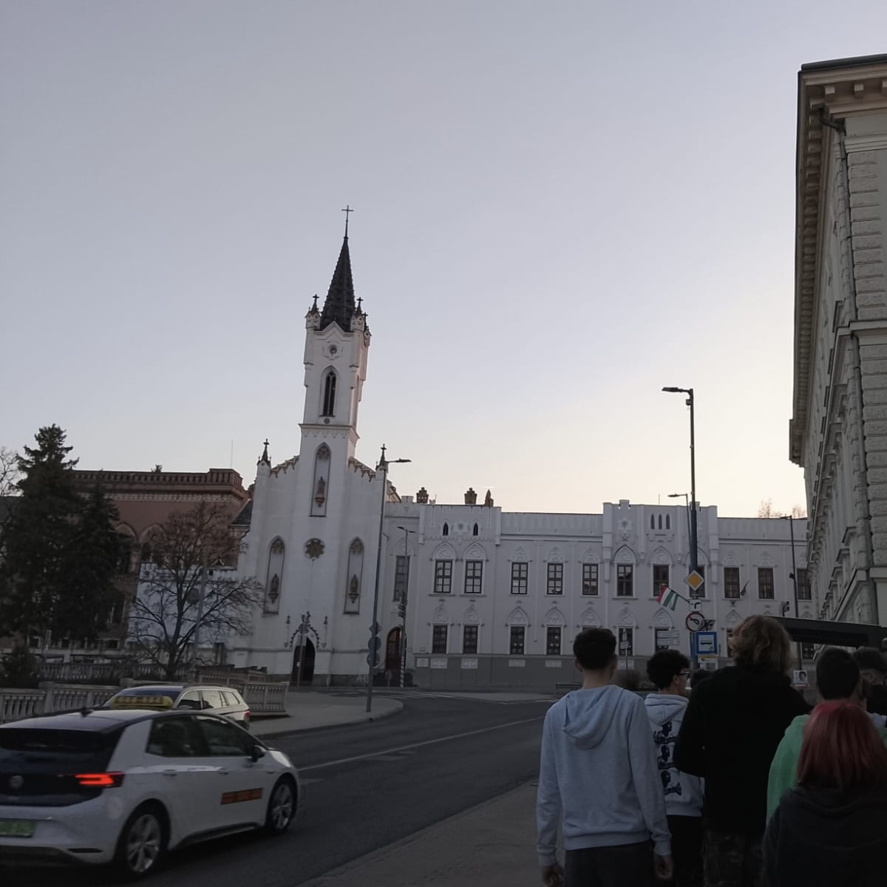
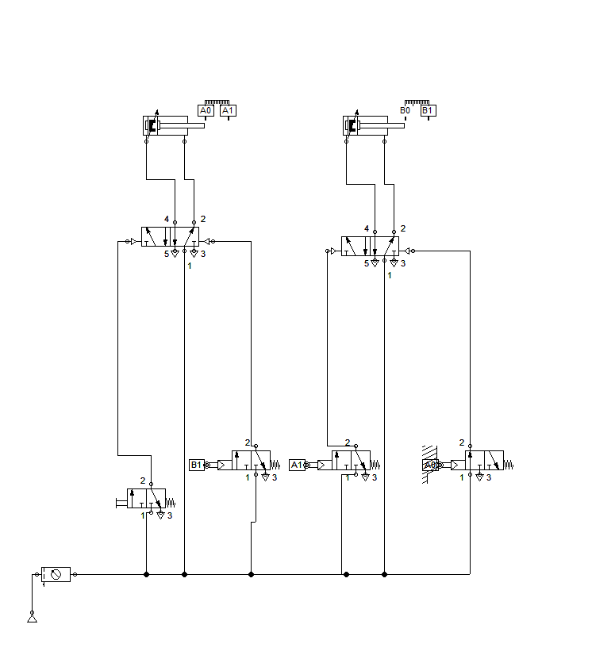
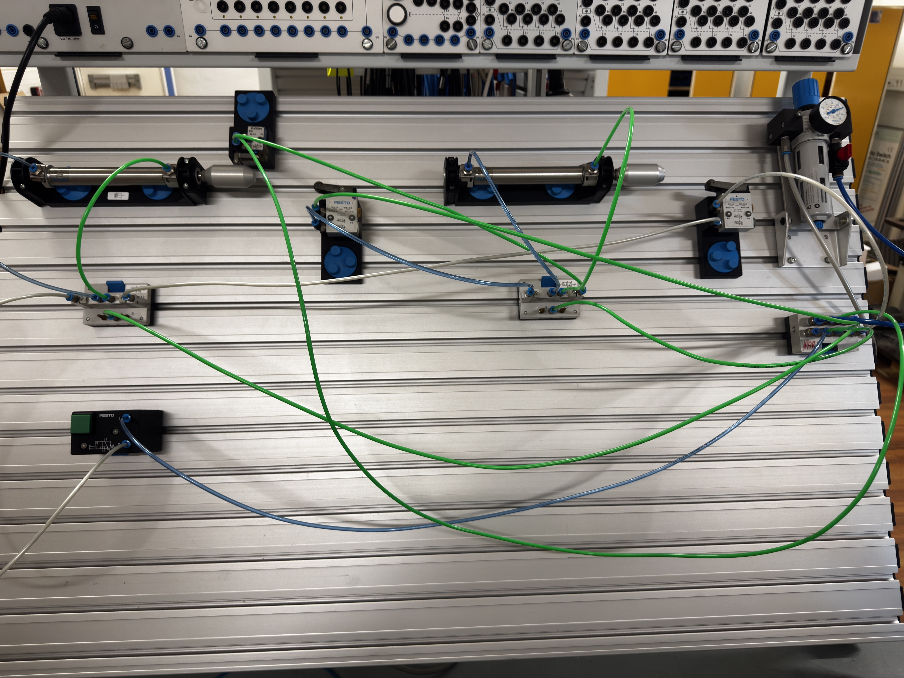
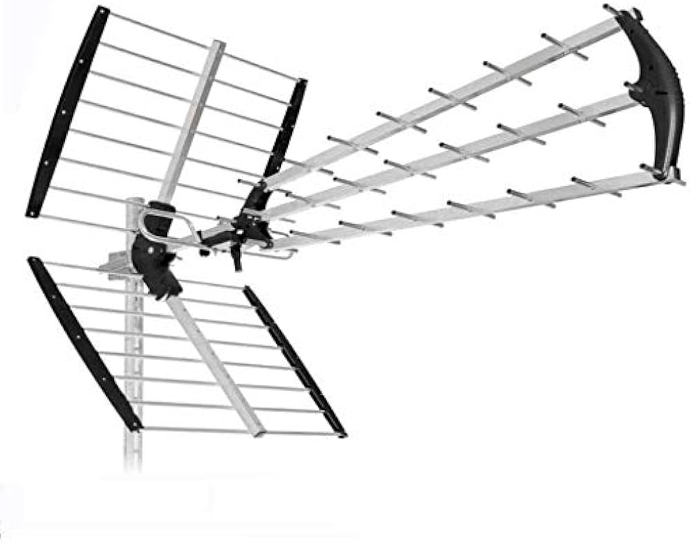
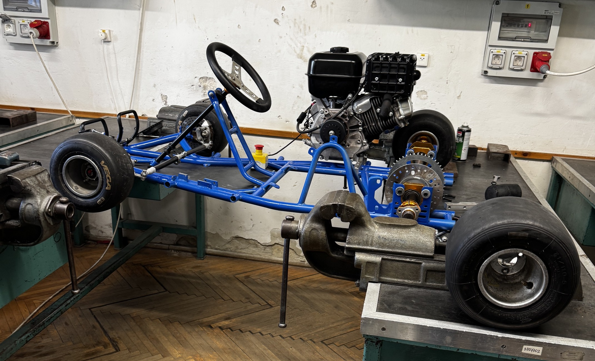
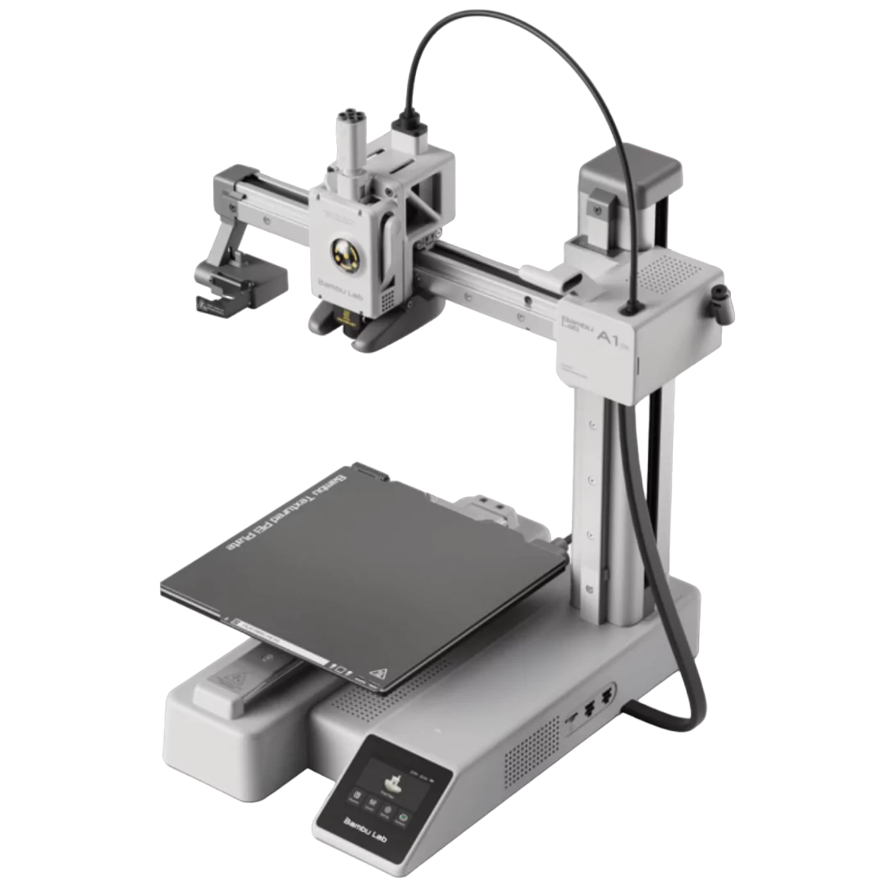

WORK & LEARNING
WITHOUT BORDERS
Relazione tecnica e analitica sull'esperienza di mobilità internazionale a Veszprém (Ungheria). Un percorso transnazionale tra automazione industriale, robotica e metodologie didattiche avanzate.
Analisi Comparativa dei Sistemi Educativi
Un'analisi dettagliata delle differenze strutturali, metodologiche e operative tra l'approccio scolastico italiano e quello ungherese incontrato sul campo.
Il Modello Ungherese (Dual Training)
Il sistema ungherese si basa sul modello di formazione duale. La scuola funziona come un vero e proprio hub industriale. I laboratori non sono spazi di simulazione teorica, ma repliche esatte di reparti aziendali.
- Pratica intensiva: Oltre il 60% del monte ore settimanale è speso direttamente sui macchinari.
- Autonomia operativa: Gli studenti affrontano problemi reali di manutenzione e calibrazione.
- Orientamento al mercato: Programmi scritti in sinergia con le aziende locali.
Il Modello Italiano (Liceo/Tecnico)
Il sistema italiano si distingue per una forte impronta logico-concettuale e una base teorica solida. Questo approccio fornisce strumenti mentali superiori per l'analisi dei problemi complessi.
- Basi matematiche: Comprensione profonda dei principi fisici che governano i sistemi.
- Flessibilità: Capacità di adattarsi a tecnologie diverse grazie a un metodo di studio strutturato.
- Integrazione PCTO: La mobilità serve per unire la nostra teoria alla loro pratica.
La scuola ospitante: IPARI
Analisi del contesto scolastico e tecnologico in cui si sono svolte le attività di formazione e laboratorio.
La IPARI di Veszprém rappresenta un punto di riferimento per l'istruzione tecnica nella regione. La struttura è organizzata per moduli di lavoro autonomi, dove ogni studente gestisce la propria postazione hardware.
L'integrazione tra i diversi dipartimenti permette lo sviluppo di progetti complessi che intersecano più competenze professionali.
100%
Laboratori Attrezzati
1:1
Rapporto Studente-Banco

Veszprém Technical CenterProgettazione Pneumatica: FluidSIM
La prima fase dello sviluppo dei sistemi di automazione: dalla logica booleana alla simulazione software del circuito.

Interfaccia di Design FluidSIMSimulazione e Validazione
Prima di toccare l'hardware fisico, ogni ciclo di lavoro è stato progettato su FluidSIM. Questo passaggio è fondamentale per evitare collisioni di pressione e danni ai componenti reali.
Abbiamo analizzato cicli complessi a due pistoni, implementando diagrammi di stato-fase e tabelle di verità per eliminare i segnali bloccanti.
Assemblaggio Fisico su Banchi FESTO
Traduzione pratica dello schema logico in un sistema elettropneumatico reale funzionante a pressione industriale.
Cablaggio e Calibrazione
L'attività pratica ha richiesto l'utilizzo di banchi prova FESTO professionali. Abbiamo gestito componenti reali impiegati nelle linee di montaggio automatizzate.
- Pistoni: 2 pistoni reagolati da un flusso di aria compressa.
- Controllo: sensori che permettono il monitoraggio della posizione.
- Regolazione: Flussimetri unidirezionali per il controllo della velocità.

Pressione Esercizio: 6 BarAerospazio: Architettura CanSat
Studio e analisi dei sistemi integrati per il monitoraggio atmosferico tramite sonde in miniatura.
Core System
Analisi dell'hardware basato su microcontrollori per l'acquisizione dati in tempo reale dai sensori ambientali.
Sensori Integrati
Gestione dei bus di comunicazione I2C e SPI per leggere i dati di telemetria (pressione, temperatura).
Mission Profile
Studio della dinamica di discesa e calcolo della velocità terminale per garantire il recupero della sonda.
Sistemi RF e Radiofrequenza
Comunicazione dati a distanza: lo studio delle frequenze e delle antenne per la ricezione della telemetria.

Frequenza: 433 MHzLa telemetria del CanSat richiede un link radio solido. Abbiamo studiato i principi della radiofrequenza (RF) focalizzandoci sulla banda dei 433 MHz, standard per le trasmissioni dati a corto/medio raggio.
Abbiamo analizzato la costruzione e l'orientamento delle antenne Yagi direzionali, comprendendo l'importanza del guadagno di antenna e del puntamento manuale per evitare la perdita di pacchetti.
Workshop Meccanica: Go-Kart Project
L'applicazione pratica della meccanica pesante: Dimostrazione del funzionamento del motore.

Dimostrazione Motore
Dimostrazione di un motore a scoppio, realizzato dagli studenti della IPARI, e il suo funzionamento.
Prototipazione Rapida: Stampa 3D
Come la stampa 3D a deposizione di filamento fuso (FDM) riduce i tempi di sviluppo nella progettazione meccanica.

Bambu Lab A1Dimostrazione della tecnologia di stampa 3D con multiple stampanti Bambu Lab A1 .
Matrice delle Competenze (Framework Unica)
Sintesi strutturata delle abilità tecniche e teoriche acquisite e consolidate durante il periodo di mobilità.
| Dominio Tecnico | Strumentazione / Software | Competenza Sviluppata | Intermedio |
|---|---|---|---|
| Elettropneumatica | FESTO Learnline / FluidSIM | Progettazione e debug di circuiti sequenziali. | Avanzato |
| Robotica Aerea | CoDrone EDU | Sviluppo di algoritmi di navigazione autonoma. | Base |
| Sistemi Embedded | CanSat / Arduino | Acquisizione dati via I2C e trasmissione RF. | Base |
| Prototipazione | Bambu Lab / CAD | Ottimizzazione pezzi per stampa FDM rapida. | Operativo |
Impatto Personale e Soft Skills
La crescita trasversale derivante dal lavorare in un contesto internazionale e multilingua.
Technical English
Tutta la documentazione, i manuali FESTO e il confornto con studenti e docenti, sono stati gestiti in lingua inglese, migliorando il vocabolario tecnico.
Teamworking Industriale
Lavoro di squadra organizzato per gruppi di lavoro, simulando i ritmi, i ruoli e le responsabilità dei veri reparti di ingegneria.
Valutazione Finale del Capolavoro
Questo percorso di PCTO in Ungheria rappresenta il mio Capolavoro in quanto unisce in una unica esperienza competenze tecniche verticali e competenze trasversali. Ha trasformato la teoria scolastica in capacità operativa reale, definendo il mio profilo tecnico in ambito europeo.
— Merola Denis 2025-2026